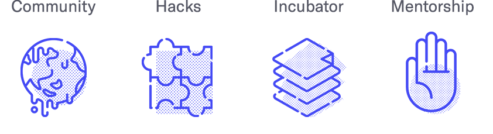
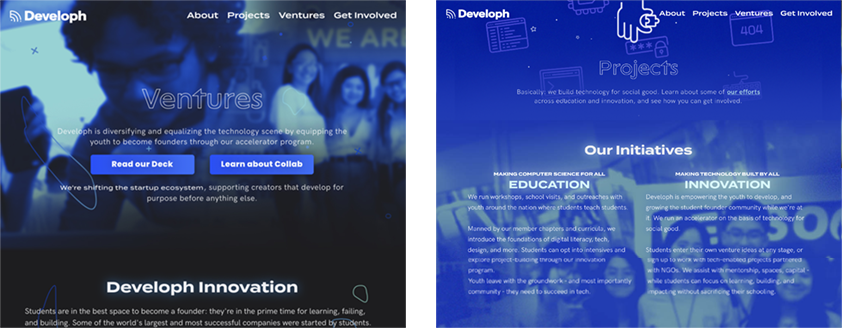
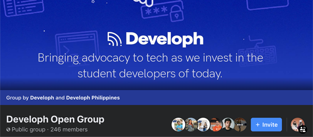
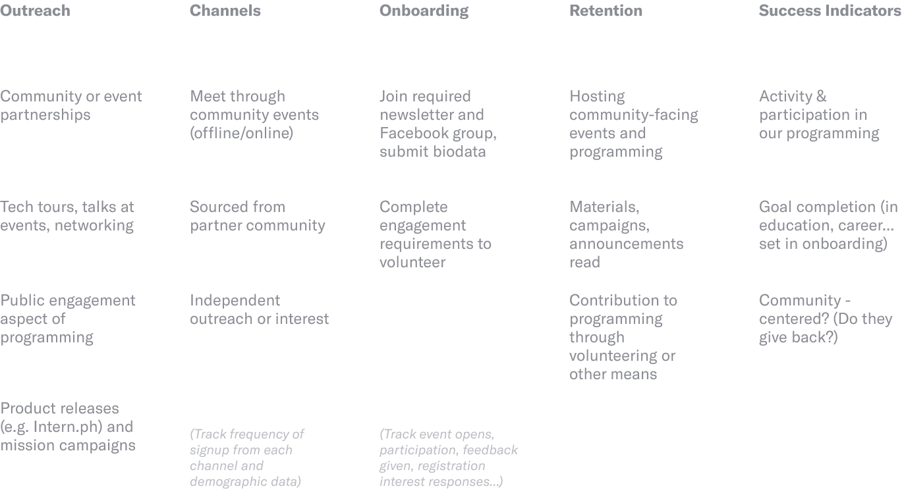
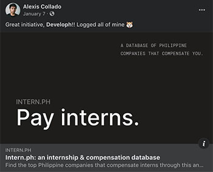
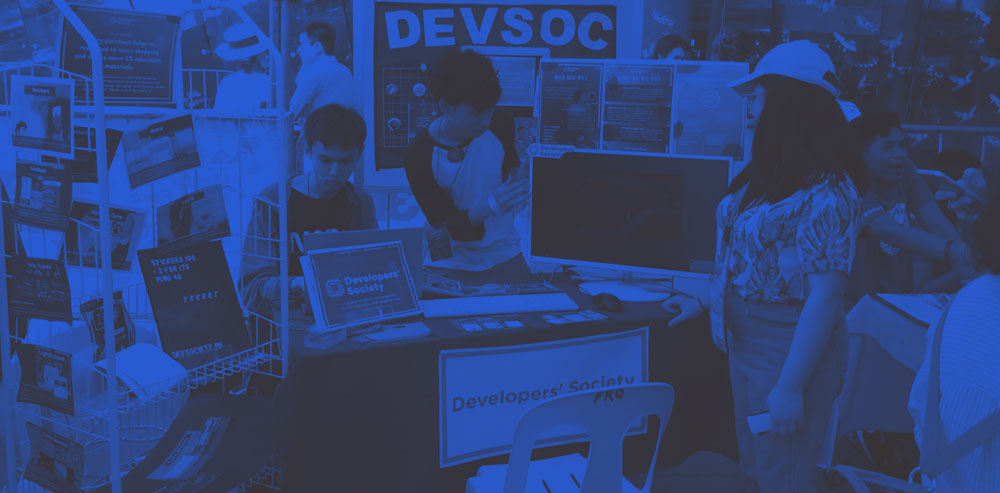
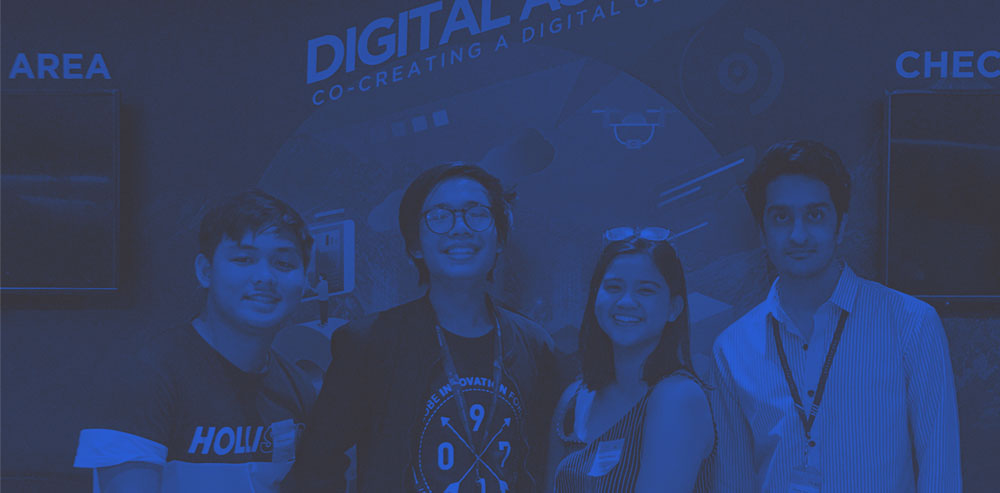

Since 2016, Developh has been constantly growing and evolving from a small club of 40 composed of lots of friends to an international nonprofit. A lot of our presence has been rooted in design and communication—especially as we've become an online organization. Here are some of our learnings and points of growth over the years.
Context
Technology that bridges, not divides
Developh exists in the interesting tech space of the Philippines: driven by hope and spiked interest, but with lack of infrastructure for students or involvement of Filipinos in many large companies. Our lives are undeniably intertwined in the consumption of technology, not really the creation of it.
From our start as a casual development organization in a high school in the Philippines to our evolution as a remote international nonprofit servicing tens of thousands of students across our programming, here are some of our workings and learnings across design. Currently, we have a 7-person design team (including me) producing initiatives and materials for over 4 chapters, 50+ student communities, and tens of thousands of students.
For nearly four years have we been working at breaking apart and reinventing tech's systems at Developh, and communicating these efforts and building on it. Here's a snippet of what we do.
This video was made for our 2018 recruitment and rebranding by member Cali Santillan, voiced by our Design Head Bianca.
Logos
In 2016, we began as a casual game development and technology organization known as Developers' Society, off a video game motif. A year later, we rebranded to a somewhat generic circuit icon to reflect our expansion as a general tech organization with a fascination for startups. In 2018, we changed our name to Developh—accompanying our expanded goals across innovation, startups, and technology. the new logo is adapted from the connectivity symbol.


As our identity grew, we looked into sleek, modern trends emerging in startups and applied it to our own brand.
Developh Website
Our website has gone through three main evolutions, with the latest one deployed in 2020. Things are simplified and cleaned as we've streamlined our operations, and have years of web analytics. We focus on two streams for direct conversions (for students/volunteers and for other supporters), highlighting all need-to-knows.
I designed and coded all iterations of our organization website.


Pitchdecks
Over the years, we've gone from casually introducing our organization to member aspirants to being crowded into Manila skyrises to get a chance at an event partnership or some funding. As we grew, I designed our decks focused more on highlighting entrypoints for potential stakeholders (students, companies), weaving our narrative and thesis as an organization into numbers, and always highlighting the work we've done. Good practice I always like to do is extra slides at the end to flip to if needed for any complex, anticipated questions.
Design Systems
After expanding outside of our school, we began establishing an online digital process. We regularly evaluate our most frequent post types and formats to build our own templates for these announcements. Common posts include scholarships, upcoming events and conferences, giveaways, announcements, and more.
To cater to different teams, we have sets of templates with varying degrees of flexibility.
Production—along with the templates we have produced, we follow a loose style guideline for sharing our initiatives. Our designs follow a blue to purple color palette, are largely solid and use familiar designs. Different divisions of our organization are also represented symbolically.
 Icon system used to represent our regular programming Our ventures/accelerator section compared to our regular programming
Social Media Management
Facebook is the primary space where we operate and share info; it's a top place for communication in Southeast Asia. Previously publishing everything manually, we now use Buffer (free plan) to schedule posts.
Our design team schedules meetings for brainstorming guided by our content guidelines. As we've gotten more cohesive, streamlined, and output more consistently, onboarding new designers or coming up with completely new materials is more difficult.
Combined, we have 16,000+ Facebook likes, 400+ Instagram followers, and 300+ Twitter followers.
Newsletter
Developh sends a newsletter once or twice a month, distributed to our student members and also advocates and other supporters. We add event highlights, calls to action, and ways to support our work—usually averaging an open rate of 60-70%. We tend to rotate on how we design information and calls to see what works more effectively, so this section is still a work-in-progress!

Membership and Community
Developh is nothing without its community—these are the members that it supports, those that back its initiatives, and are how we interface and build the tech ecosystem. Since going remote, a challenge is constant strategizaiton on how to continuously acquire more members—our main metric, and how to engage them in programs be it education or innovation ones. It's key for members to be in our pipeline.
 We maintain a members-only group and an open group for public announcements that helps us engage with industry professionals and advocates of our workRecruitment Cycle
Until 2019, we conducted recruitment cycles: three-week periods of intense marketing and campaigning to gather users on a limited-time signup form. We would onboard them through a series of tasks (posting on the group, sharing a DevEd material, or signing up for a mentor/activity) and have them on our group and mailing list loop.
Community Program
Recruitment cycles were too isolating in reach; we noticed students finding us through yearly programming and inquiring to join—who we couldn't make wait another 8 or so months to onboard.
Our new community system with Developh establishes a consistent entrypoint (the group/member mailing list) whenever we run projects, gives us new funnels through existing tech groups in high schools and universities, and allows us to meet more students to bring into leadership roles.
Regional Directors
Developh core team members who intentionally source and outreach organizations, initiatives, and events in their region of operation to run programming (workshops, roundtables) in their area, and get more members for Developh while understanding their region.
Community Partners
High school, college, or community-level technical groups that we work on collaborative programming with. We provide these groups funding, event delegation opportunities, and more in exchange of manpower, shared events, outreach, etc.
We accomplish our Community Program with these key partners, but are constantly looking to reevaluate their relationships and how we can maximize potential.
 An overview of metrics, factors we look at for membersOutreach
We have communities that operate to serve broader regions. Our design team helps create their brand assets, providing templates and identity guidelines—and working with their own volunteer designers for the right materials to be put out.
Other spaces where we engage might be on social media conducting chats, hosting weekly posts, community roundtables on Hangouts, and more.
Developh Blog
Bianca, my Design VP and I have come into the practice of pushing for more press and coverage for Developh. Part of how we maintain this beyond our multimedia campaigns is through writing articles and reflections on a Medium blog for Developh.
Developh Initiatives
Designing and shipping initiatives for more pathways in tech
Along with our organization's own systems, we've released over a dozen ventures and projects as part of our work to build more pathways in technology. These range from career and mentorship services, entertaining web experiences, and more.
DevEd
Our education initiative is known as DevEd, where we produce courseware as well as short bytes of educational information and content. I did design for most DevEd materials and managed the project management and creation of the materials, with our former Technology Head Keith Leonardo reviewing and writing a lot of our material. These resources have been shared thousands of times online, used in dozens of classrooms.
I also designed the websites and promotional materials in addition to the DevEd materials itself. I wrote a good amount of tutorials on web development and other emerging media topics, too!

Collab
For large, one-off events we enjoy going a bit more independent on designs. For Collab—a mission-based acceleration we launched in 2019, I led the design of a mini-identity for the event and program.


Intern.ph
In January 2020 we launched a compensation database for the Philippines, giving students the ability to know how they might be compensated at a company and what to expect. This product release falls in line with our Career Immersion programming and Summer Internship matching, programs we're been running since 2018.
Intern.ph is an example of a tool we've released that goes into constant use and reach. It's important for us to watch on how these materials get distributed to ensure the data is relevant to all; most submissions are referred to from outside of Deveoph.

Mental Health Hackathon
One of our earliest major online events in 2017 was Mental Health Hacks, an online hackathon that welcomed over 100 participants from around the world to tell stories or offer solutions around the mental health space. I designed the branding and all materials for the event.
We received an incredible amount of entries and support. During the duration of the event, about 10 core members went on rotation to provide engineering, design, or simply accompaniment on a Discord server we put up to discuss the hackathon.
I was able to secure partnerships with the largest mental health advocacy groups in the Philippines who helped framed possible problem spaces and guiding material for participants, along with judging in a points system we organized.

Photos of Developh
Insights
Measuring the impact of Developh's work
Since founding Developh in 2016, I've been taken to speak across three continents, have talked with dozens of student teams and learned from hundreds of students about what makes innovation work, and what doesn't. I've shaped my perspective of the tech industry and look at all I do with intent and empathy shaped by the experiences of over 75,000 students we've touched. This is the most important work I do today.
 Developh at the Manila Maker Faire
This organization would not be possible with the work of over 40 core members and volunteers who have helped shaped our work and advocacy. We're constantly aligning our principles with beliefs shaped by all involved and all we try to fight for, plot events and campaigns, and more.
It's always a challenge to stand up against an ecosystem as teenagers, building new entrypoints to the technology scene out of our own. We knew nothing about networking, startups, technology, design, code, or anything at the beginning of Developh. In four years, I had grown with 40-something passionate friends and volunteers in countless ways. Somehow, this is still only the beginning.
 Developh Leads at a Globe EventHow do your student-run organizations think about design and execute? I'd love to hear your thoughts.